As funções orgânicas, bem como a integração do animal no meio ambiente estão na dependência de um sistema especial denominado sistema nervoso.
Isto significa que este sistema controla e coordena as funções de todos os sistemas do organismo e ainda, recebendo estímulos aplicados à superfície do corpo animal, é capaz de interpretá-los e desencadear, eventualmente, respostas adequadas a estes estímulos.
Assim, muitas funções do sistema nervoso dependem da vontade (caminhar, por exemplo, é um ato voluntário) e muitas outras ocorrem sem que delas tenhamos consciência (a secreção da saliva, por exemplo, ocorre independente de nossa vontade).
É fácil verificar que, à medida que subimos na escala zoológica, a complexidade do sistema nervoso aumenta, acompanhando a maior complexidade orgânica dos animais considerados.
Seu máximo desenvolvimento é alcançado no homem, pois nesta espécie zoológica, o sistema nervoso responde também por fenômenos psíquicos altamente elaborados.
O sistema nervoso interage com o meio externo e interno, mantendo a homeostase.
Para isso, propriedades básicas do protoplasma devem ser lembradas:
Excitabilidade, condutibilidade e contratilidade.
Origem embrionária
1) Ectoderme: origina a pele e o sistema nervoso.
O sistema nervoso origina-se da placa neural, sulco neural, goteira neural e, por fim, a goteira neural.
O tubo neural desprende-se do epitélio de origem fechando-se na forma de um tubo.
Observamos a formação das cristas neurais (mais tarde originarão o sistema nervoso periférico) e a notocorda, que dará origem às vértebras.
O disco intervertebral é formado por dois núcleos: fibroso (mais externo) e o pulposo (mais interno), sendo este último um remanescente da notocorda.
A extremidade anterior do tubo neural se desenvolve mais que a posterior formando uma dilatação denominada vesícula encefálica ou arquencéfalo.
2) Mesoderme: origina coração, vasos, músculo, ossos.
3) Endoderme: origina as vísceras.

Na evolução embrionária a vesícula anterior (encefálica) irá formar outras três vesículas denominadas:
Prosencéfalo;
Mesencéfalo;
E rombencéfalo.
O prosencéfalo formará o telencéfalo e o diencéfalo.
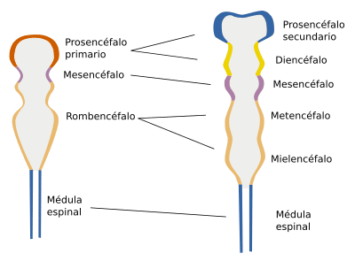
O diencéfalo formará estruturas como o tálamo e o hipotálamo enquanto que o telencéfalo se desenvolverá e dará origem aos hemisférios direito e esquerdo e também aos núcleos da base.
Enquanto que o mesencéfalo formará o próprio mesencéfalo.
E o rombencéfalo em metencéfalo (formará a ponte e o cerebelo) e o mielencéfalo (medula espinhal).
Quando falamos em encéfalo estamos considerando o tronco cerebral, constituído pelo mesencéfalo, ponte e bulbo, como também o cerebelo, ambos, adicionados ao cérebro propriamente dito.
Logo, cérebro e encéfalo são denominações que determinam estruturas diferentes.
Em um corte transversal do tubo neural identificamos estruturas diferentes.
No seu interior há uma cavidade chamada de canal neural delimitada posteriormente, por lâminas alares (formarão os centros sensitivos) e, anteriormente, por lâminas basais (formarão os centros motores).
Estas lâminas são separadas por sulcos limitantes (formarão os centros vegetativos), superiormente há a lâmina do tecto e inferiormente a lâmina do assoalho.
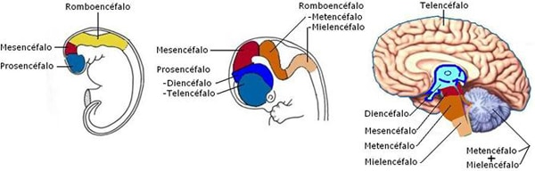
Divisão do sistema nervoso
Reconhecemos no sistema nervoso duas partes que são o sistema nervoso central (SNC) e o sistema nervoso periférico (SNP).
A divisão é topográfica e também funcional, embora as duas porções sejam interdependentes.
O sistema nervoso central é uma porção de recepção de estímulos, de comando e desencadeadora de respostas.
Pode-se dizer que o SNC está constituído por estruturas que se localizam no esqueleto axial (coluna vertebral e crânio): são a medula espinal e o encéfalo.
A porção periférica está constituída pelas vias que conduzem os estímulos ao sistema nervoso central ou que levam até aos órgãos efetuadores as ordens emanadas da porção central.
O sistema nervoso periférico compreende os nervos cranianos e espinhais, os gânglios e as terminações nervosas.

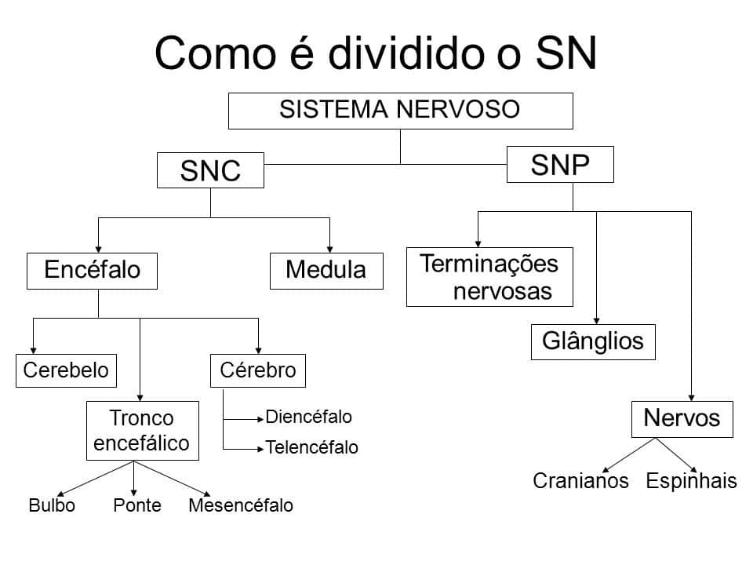
Meninges
O encéfalo e a medula espinhal são envolvidos e protegidos por lâminas (ou membranas) de tecido conjuntivo chamadas, em conjunto, meninges.
Estas lâminas são, de fora para dentro: a dura-máter, a aracnóide-máter e a pia-máter.
A dura-máter é a mais espessa delas e a pia-máter a mais fina.
Esta última está intimamente aplicada ao encéfalo e à medula espinhal.
Entre as duas está a aracnóide, da qual partem fibras delicadas que vão ter è pia-máter, constituindo uma rede semelhante a uma teia de aranha.
A aracnóide é separada da dura-máter por um espaço capilar denominado espaço subdural e da pia-máter pelo espaço subaracnóide, onde circula o líquido cérebro-espinhal (ou líquor).
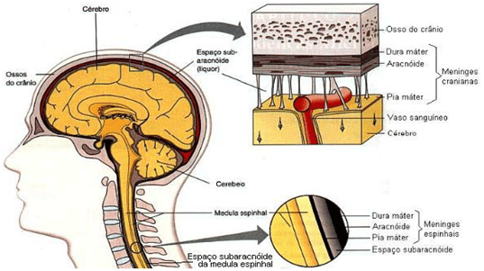
Neurônios
O neurônio é a célula que constitui o sistema nervoso, trata-se de uma célula extremamente especializada com funções que uma vez perdidas não serão restabelecidas, isto é, são células incapazes de se reproduzirem.
Apesar de conhecermos a unidade funcional do sistema nervoso, não conseguimos a partir de uma célula, estabelecer a função de todo o órgão.
A grande dificuldade do sistema nervoso constitui-se no fato de que o neurônio, dependendo da área considerada, se comporta de uma forma diferente.
Nos dá a impressão de que há vários órgãos dentro de um mesmo órgão.
A célula neural possui um corpo celular ou soma, uma série de prolongamentos denominadas dendritos e uma região de comunicação mais espessa, denominada axônio.
Este axônio prende-se ao corpo celular através de uma região denominada cone de implantação ou simplesmente Hillock.
Na porção terminal do axônio encontramos pés ou botões terminais onde através de vesículas químicas haverá comunicação interneuronal.
Essas comunicações poderão ser químicas ou elétricas, vale destacar que no organismo humano há prevalência de sinapses (regiões de comunicações) químicas.
Uma capa fosfolipídica, muitas vezes, envolve estes axônios sendo denominadas bainha de mielina, uma espécie de isolante elétrico que acelera a condução do impulso nervoso.
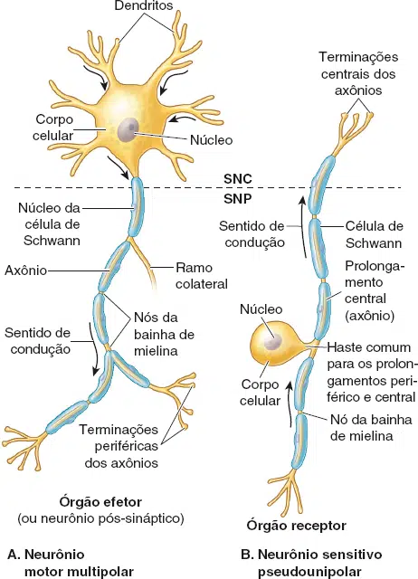
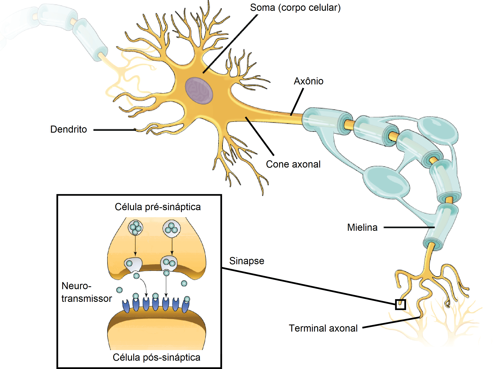
Sinapse
É a região localizada entre neurônios onde agem os neurotransmissores (mediadores químicos), transmitindo o impulso nervoso de um neurônio a outro, ou de um neurônio para uma célula muscular ou glandular.
O espaço entre as membranas das células é chamado fenda sináptica.
A membrana do axônio que gera o sinal e libera as vesículas na fenda é chamada pré-sináptica, enquanto que a membrana que recebe o estímulo através dos neurotransmissores é chamada pós-sináptica.
As sinapses geralmente acontecem de 3 maneiras diferentes:
1 – Axodendríticas
2 – Axossomáticas
3 – Axoaxônicas
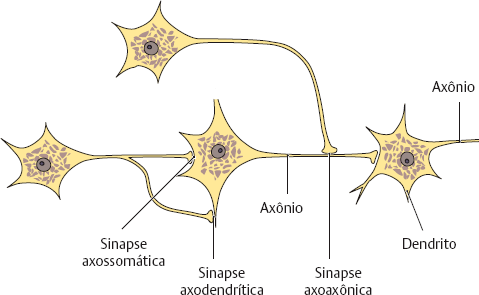
Mas podem acontecer de até 6 maneiras diferentes, são elas:
1 – Axossecretora;
2 – Axoaxônica;
3 – Axodendrítica;
4 – Axoextracelular;
5 – Axossomática;
6 – Axossináptica.
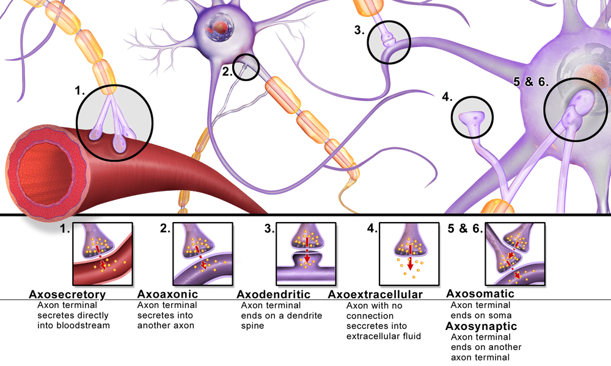
Classificação dos neurônios quanto aos seus prolongamentos
A maioria dos neurônios tem vários dendritos e um axônio, por isso são chamados multipolares.
Mas há, também, neurônios bipolares e pseudounipolares.
Nos neurônios bipolares, dois prolongamentos deixam o corpo celular, um dendrito e um axônio. Entre eles, estão os neurônios bipolares da retina e do gânglio espiral da orelha interna.
Nos neurônios pseudounipolares, cujos corpos celulares se localizam nos gânglios sensitivos, apenas um prolongamento deixa o corpo celular, logo divi-dindo-se, à maneira de um T, em dois ramos, um periférico e outro central. O primeiro dirige-se à periferia, onde forma terminação nervosa sensitiva; o segundo dirige-se ao SNC, onde estabelece contatos com outros neurônios.
Na neurogênese, os neurônios pseudounipolares apresentam, de início, dois prolongamentos, havendo fusão posterior de suas porções iniciais. Ambos os prolongamentos têm estrutura de axônio, embora o ramo periférico conduza o impulso nervoso em direção ao corpo, à maneira de um dendrito.
Como um axônio, esse ramo é capaz de gerar potencial de ação. Nesse caso, entretanto, a zona de gatilho situa-se perto da terminação nervosa sensitiva. Essa terminação recebe estímulos, originando potenciais graduáveis que, ao alcançar a zona de gatilho, provocam o surgimento de potencial de ação. Este é conduzido no sentido centrípeto, passando diretamente do prolongamento periférico ao prolongamento central.
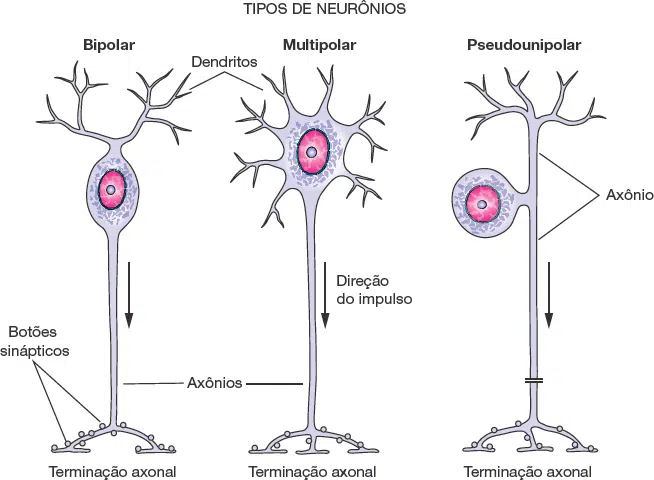
Corpo celular
O corpo celular ou soma é o centro trófico do neurônio, que contém o núcleo e é onde se concentram as organelas.
Ele pode ser esférico, em forma de pera ou anguloso. De modo geral, as células nervosas são grandes, podendo o corpo celular medir até 150 μm de diâmetro. Uma célula com essa dimensão, quando isolada, é visível a olho nu.
A membrana plasmática que envolve o corpo celular se continua com a membrana dos prolongamentos e é capaz de receber estímulos nervosos.
O núcleo da maioria dos neurônios é esférico e pouco corado em cortes histológicos, pois seus cromossomos costumam ser distendidos, indicando uma atividade sintética intensa. Em cortes histológicos, cada núcleo mostra, em geral, um nucléolo.
O corpo celular costuma ser rico em retículo endoplasmático granuloso, em forma de cisternas paralelas, entre as quais há numerosos polirribossomos livres, indicando que os neurônios têm grande atividade de síntese de proteínas.
Os conjuntos de cisternas e ribossomos podem ser vistos ao microscópio óptico sob forma de manchas basófilas espalhadas pelo citoplasma, coradas em azul pela hematoxilina, chamadas corpúsculos de Nissl.
A quantidade de retículo endoplasmático granuloso depende do tipo e do estado funcional dos neurônios, sendo muito abundante nos neurônios motores.
O complexo de Golgi é formado por grupos de cisternas achatadas paralelas localizadas em torno do núcleo.
As mitocôndrias existem em quantidade moderada no corpo celular e também estão concentradas nas terminações dos axônios.
Os neurofilamentos são filamentos intermediários do citoesqueleto que medem cerca de 10 nm de diâmetro. São compostos de diferentes proteínas e são abundantes tanto no corpo celular quanto nos prolongamentos, especialmente no axônio.
O citoplasma ou pericário dos neurônios tem grande quantidade de microtúbulos, responsáveis pelo transporte de vesículas no corpo celular e ao longo dos prolongamentos.
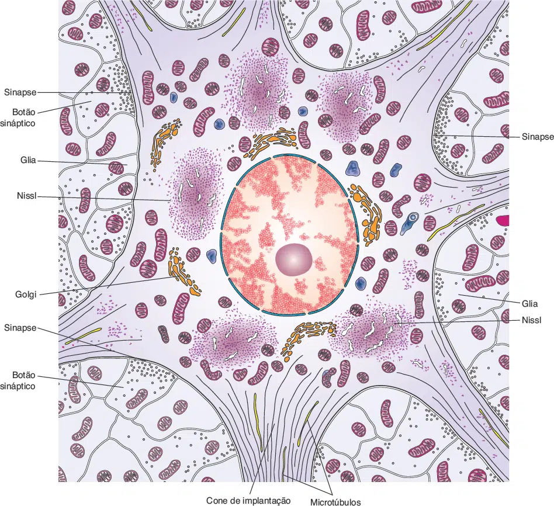
Como são organizados os nervos
As fibras nervosas são envolvidas por “capas” de tecido conjuntivo denominados:
Endoneuro = envoltório de uma única fibra nervosa;
Perineuro = envolve um fascículo nervoso;
Epineuro = envolve diversos fascículos, ou seja, o nervo. Sendo este último bem vascularizado.
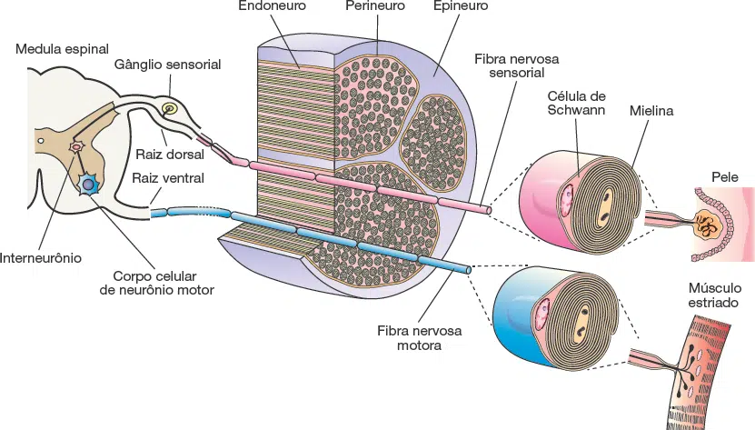
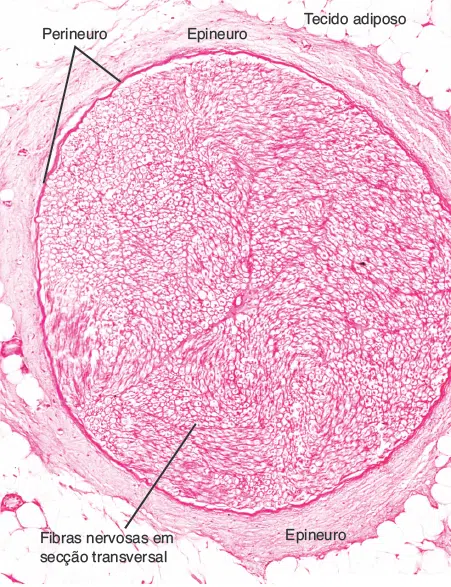
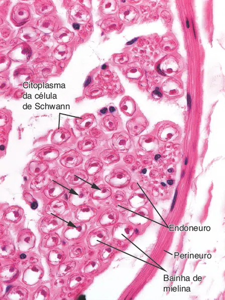
Potencial de ação
Na grande maioria das vezes o impulso nervoso possui condução anterógrada, isto é, dos dendritos para os axônios.
O impulso nervoso inicia-se por um potencial de ação desencadeado no receptor periférico constituindo a via aferente ou ascendente de condução, enquanto que a resposta a essa despolarização caminhará por uma via denominada eferente ou descendente.
Entre a via aferente e a via eferente, o cérebro, tronco cerebral ou o cerebelo recebem essas informações e as interpretam, em centros denominados centros de associação.
Assim percebemos informações dolorosas, térmicas, de tato, pressão, informações sobre pressão arterial, alteração de pH, pressões dos gases, viscerais, motoras, etc.
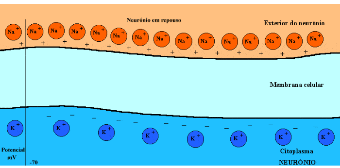
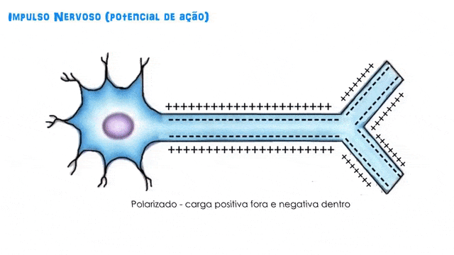
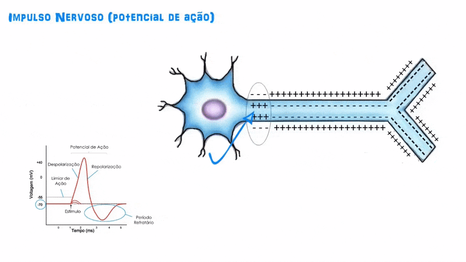
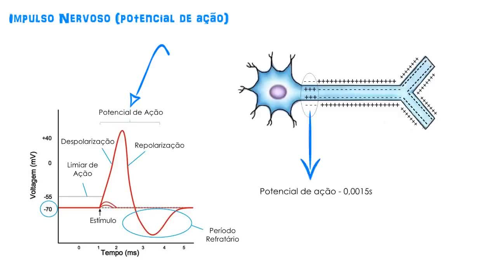
Neuróglias
Além de células neuronais (neurônios propriamente ditos) o sistema nervoso possui uma diversidade de células “auxiliares” denominadas células da glia ou neuróglias.
A) As células de Schwann são responsáveis pela mielinização dos axônios do sistema nervoso periférico;
B) Os oligodendrócitos são células responsáveis pela mielinização dos axônios dentro do sistema nervoso central;
C) Os astrócitos são células morfologicamente heterogêneas, que fornecem suporte físico e metabólico aos neurônios do SNC. Além de atuar como células de nutrição, são barreiras a componentes exógenos como antibióticos, por exemplo, ou mesmo excesso de alguns íons como o potássio;
D) A micróglia consiste em células muito pequenas com pequenos núcleos alongados e escuros, que apresentam propriedades fagocíticas.
E) As Células ependimárias ou Ependimócitos são células que revestem os ventrículos encefálicos e o canal central, estando em contato direto com o líquido cefalorraquidiano.
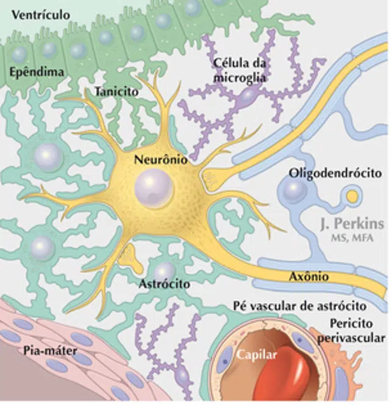